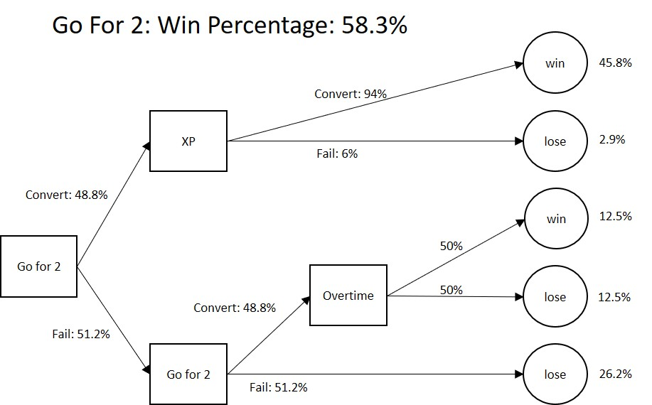
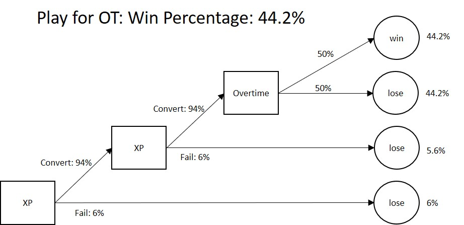
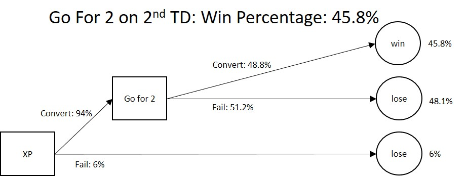

POSTED: Kenneth Huebsch |
Down by 2 touchdowns? Go for 2.
Why NFL teams should always go for 2, when trailing by 14 late in the game.
Background:
In 2018 Week 7 of the NFL, the Giants were trailing the Falcons by 14 points with three minutes left in the game. They scored a touchdown and Pat Shurmur elected to attempt a the 2-point conversion instead of kicking the extra point. In between irrelevant conversations of Le'veon Bell and the Amari Cooper trade, ESPN announcers criticized the decision and questioned Shurmur's competency. This isn’t the first time that a team has gone for 2 down by 14. The Eagles went for 2 in Week 5 trailing the Vikings in the fourth quarter. The fact that I had seen this decision elsewhere this season made me wonder if head coaches might be smarter than we give them credit for. It also made me wonder if we all should do a little research before we publicly criticize somebody else. So, I decided to do a little research myself.
Assumptions:
For this study, I made the following assumptions:
- The team will score two touchdowns while not allowing the opposing team to score for the remainder of the game.
- A 2-point conversion will be successful 48.8% of the time, which was league average last year calculated by Riley Kolste Football based on 2017 data.
- An extra point will be successful 94%, which was the extra point conversion rate last year, calculated by me.
- An NFL team has a 50% chance of winning a game in overtime because possession is determined by a coin flip, and the fact that the two teams are tied at the end of the game means that they are probably evenly matched.
Bottom Line:
There are countless human factors and environmental variables that should also influence this decision, but based on 2017 NFL conversion rates Pat Shurmur made the right decision to go for 2 down 14. According to historical conversion success rates, you should always go for 2 following the first touchdown when trailing by 14 late in the game. This approach results in a 58.3% chance of winning the game, assuming the other team does not score again. On the contrary, the safe traditional decision to kick the extra point, results in a 44.2% chance of winning the game. Kicking the extra point first, and then going for 2 on the second touchdown, results in a 45.8% chance of winning.
Decision Trees:
The decision tree below shows the probabilites of the different outcomes associated with going for 2 after the first touchdown.
The decision tree below shows the probabilites of the different outcomes associated with kicking the extra point after the first touchdown and playing for overtime.
The decision tree below shows the probabilites of the different outcomes associated with kicking the extra point after the first touchdown and then going for two on the 2nd touchdown. It is interesting to see how this has a lower probability of success than the reverse. The reason for this is because there is no room for recovery if you are unable to convert the 2nd 2-point conversion.
Conclusion:
If an NFL team performs consistent to the league average in terms of 2-pt conversion rate, the team should always go for 2 after the first touchdown when trailing by 14 points late in a game.
Analytics is no longer exclusive to baseball. NFL team’s analytics departments are bigger today then they ever have been in the past. NFL coaching staffs are realizing that there is valuable information that can be mined from historical data and the results can be used to make intelligent game-time decisions. Doug Pederson made the right decision in week 2, and Pat Shurmur made the right decision in week 7. Even though it is safer to play for overtime, it is statically less beneficial. Go for the win, go for 2.